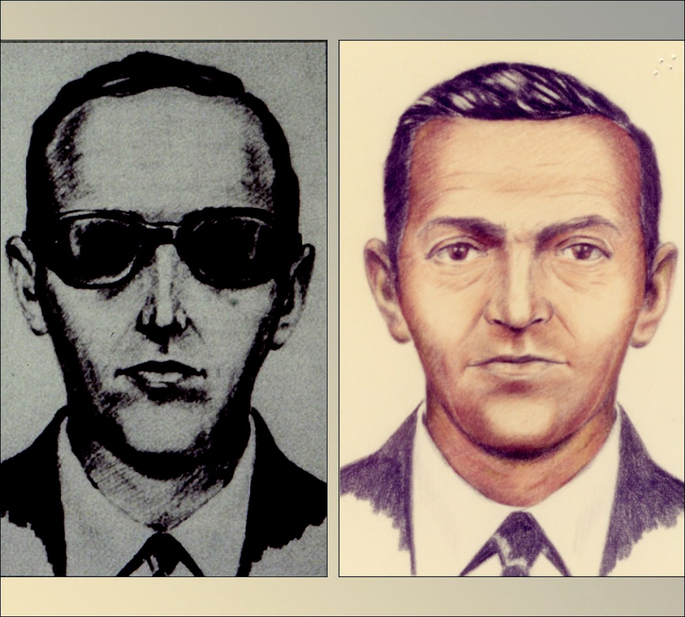

The Daily Case
Case of D.B. Cooper
Brittanica
The Editors of Encyclopaedia Britannica
D.B. Cooper, also known as Dan Cooper, criminal who in 1971 hijacked a commercial plane traveling from Portland, Oregon, to Seattle, Washington, and later parachuted out of the aircraft with the ransom money. An extensive manhunt ensued, but the hijacker was never identified or caught, resulting in one of the greatest unsolved mysteries in U.S history. The man used the alias Dan Cooper, but, in the subsequent news reporting, a reporter misheard the name as D.B. Cooper, which became widely used.
On November 24, 1971, the day before Thanksgiving, a "nondescript" man who appeared to be in his mid-40s and about 6 feet tall (1.83 metres) bought a $20 ticket for Northwest Orient Airlines Flight 305. He gave his name as Dan Cooper, which later turned out to be fake. Shortly after takeoff from Portland, he handed a note to a flight attendant in which he claimed to have a bomb in his briefcase. He then proceeded to open the attaché case, which contained numerous wires, red sticks, and a battery. Cooper demanded four parachutes and $200,000 in $20 bills (worth about $1.2 million in the early 21st century).
After the flight landed in Seattle, Cooper released the 36 passengers when authorities provided the money and parachutes. However, he forced two pilots, a flight engineer, and a flight attendant to remain on the plane. After it refueled, he ordered the pilots to fly to Mexico City. Per his instructions, the plane flew under 10,000 feet at a speed slower than 200 knots. Around 8:00 PM, while between Seattle and Reno, Nevada—widely believed to be near Ariel, Washington—Cooper lowered the rear steps and jumped. He then disappeared.
The FBI launched what would become “one of the longest and most exhaustive investigations” in its history, known as NORJAK (Northwest Hijacking). Initially the agency believed that Cooper knew both planes and the area, and it was speculated that he served in the military, possibly as a paratrooper; later, however, it was decided that he was not an experienced skydiver because the jump was too dangerous, and he failed to notice that his reserve parachute was sewn shut for use in training. The agency reported that it looked at some 800 suspects in the first five years, with almost all being eliminated. Some were ruled out on the basis of DNA that was eventually recovered from the tie Cooper took off before jumping. One prime suspect was Richard Floyd McCoy, who was arrested for a similar crime several months later. However, he was eliminated as a suspect, partly because he did not match the descriptions provided by two flight attendants. (While serving his sentence, McCoy made a fake gun and escaped from prison but was killed in a shoot-out with law enforcement.)
Many speculated that Cooper—who was outfitted in a business suit, trench coat, and loafers—did not survive. At that altitude the winds were more than 200 miles (322 km) per hour, and the parachute he used could not be steered. In addition, he would have landed in a rugged, heavily wooded area. After years of dead-end leads, investigators received a break in 1980 when a boy found a decaying package containing $5,800. It was buried along the Columbia River, north of Portland and some 20 miles (32 km) from Ariel. The serial numbers of the money—all of which were $20 bills—matched those of the ransom. However, following an extensive search, nothing further was discovered. Although the FBI continued to receive tips, in 2016 the agency officially closed its investigation, stating that its resources could best be used on other cases.
The unsolved mystery fascinated the country, and D.B. Cooper became something of a folk hero, inspiring numerous songs, books, and movies.